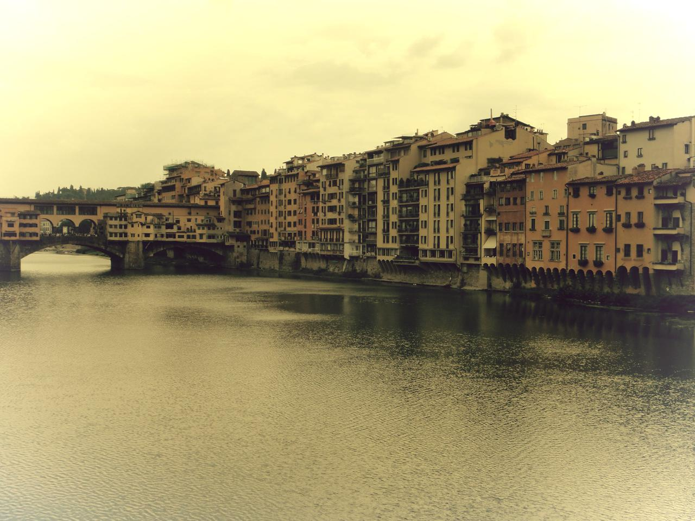

الذكرى
أجمل شعور في الوجود هو عندما تأسرك ذكرى. هذا الشعور الغامض الذي يتكبّل كيانك للحظة. نحنُّ دوماً إلى الماضي حتّى و لو كان موجعاً. نتقبّل الماضي لأنّنا عشناه، ذقنا حلوه و مرَّه، لكننا نخاف الآتي. ذواتنا لا تتقبّل المحجوب، تتوق لأن تستهلك الأيام لترميها في حجر النسيان، حتى يأتي يومٌ وتنتشلها على هيئة ذكرى. الذكريات هيَ أيام ميتة، نوقظها، تغيّرنا إلى الأبد، لتموت مرّةً أُخرى.
فلورنس 2016
